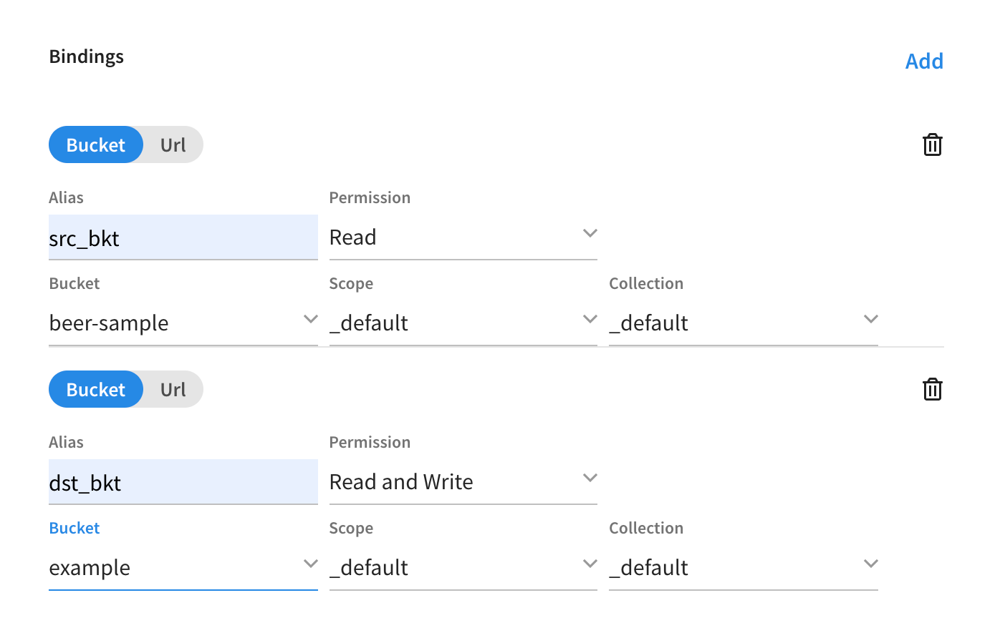
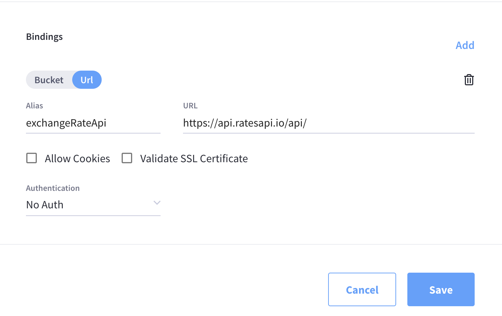
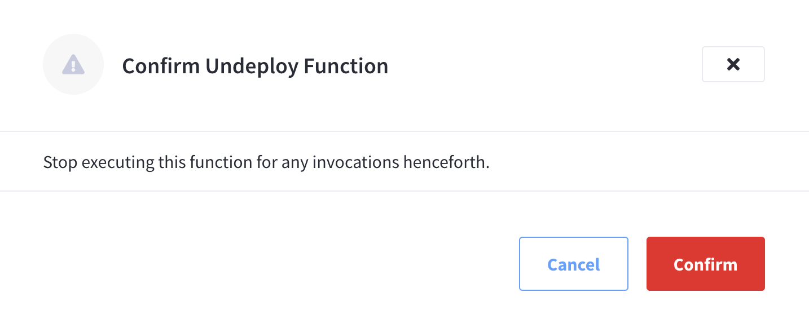
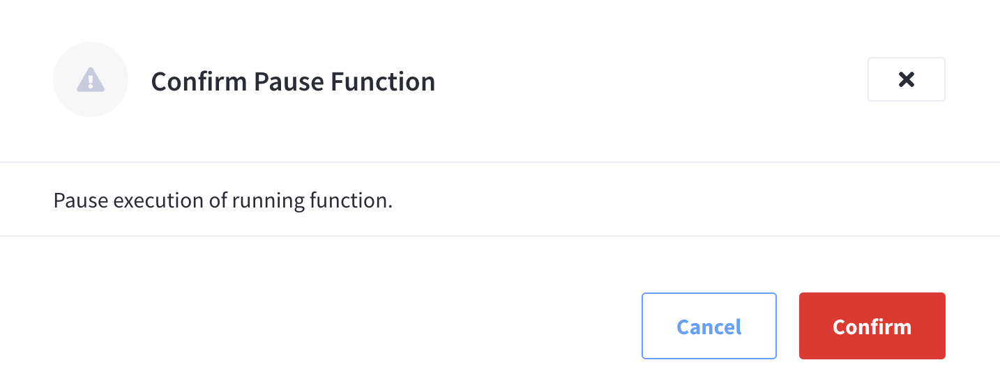
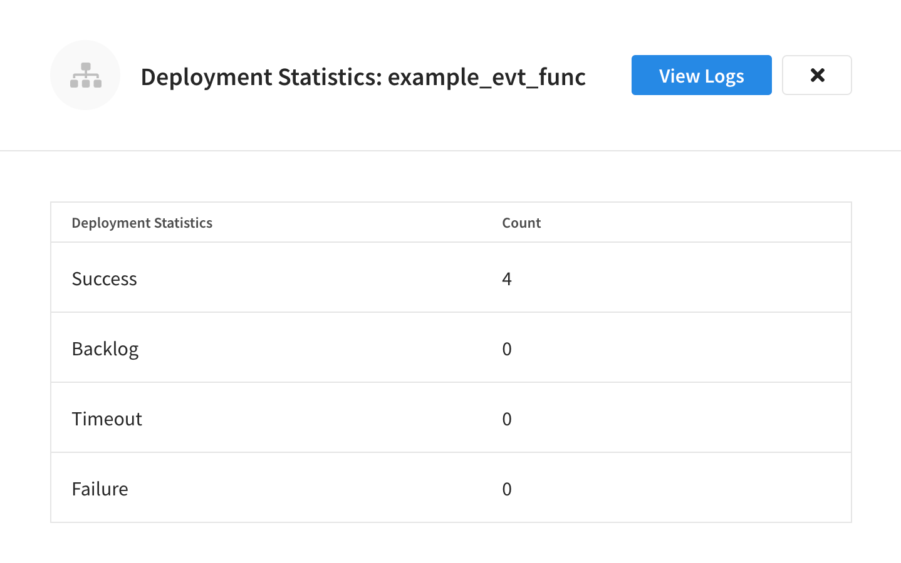
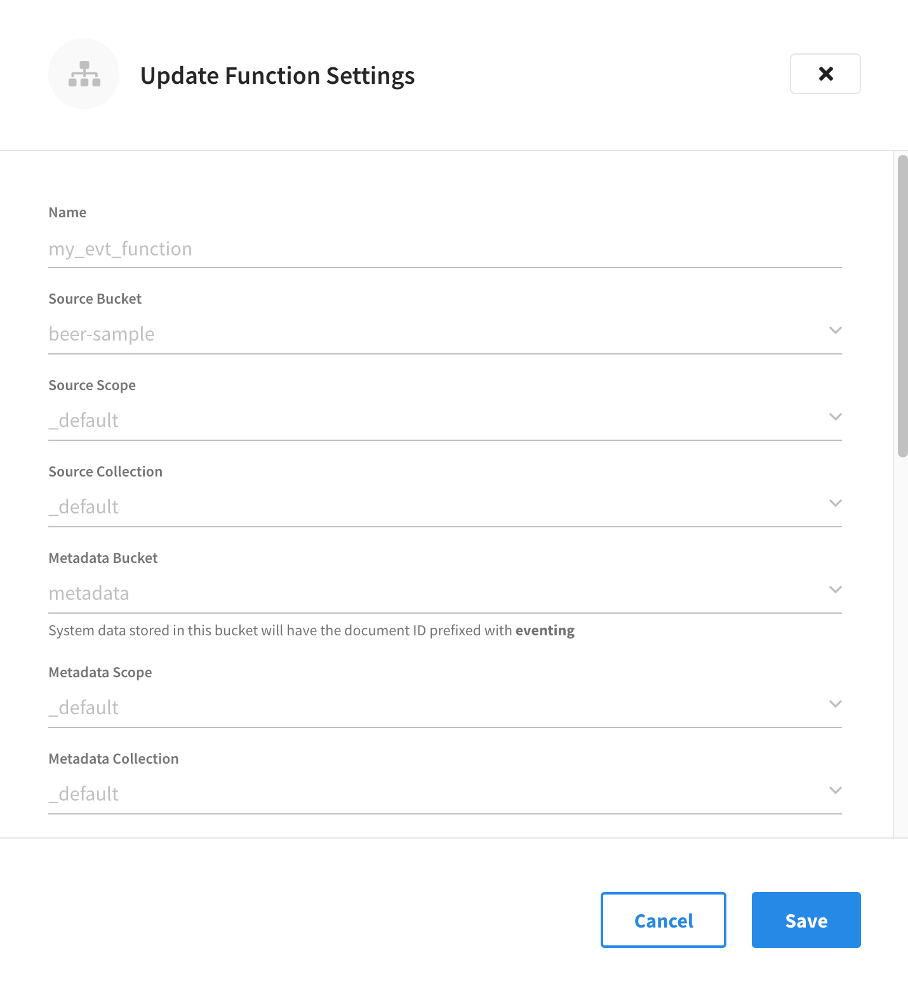
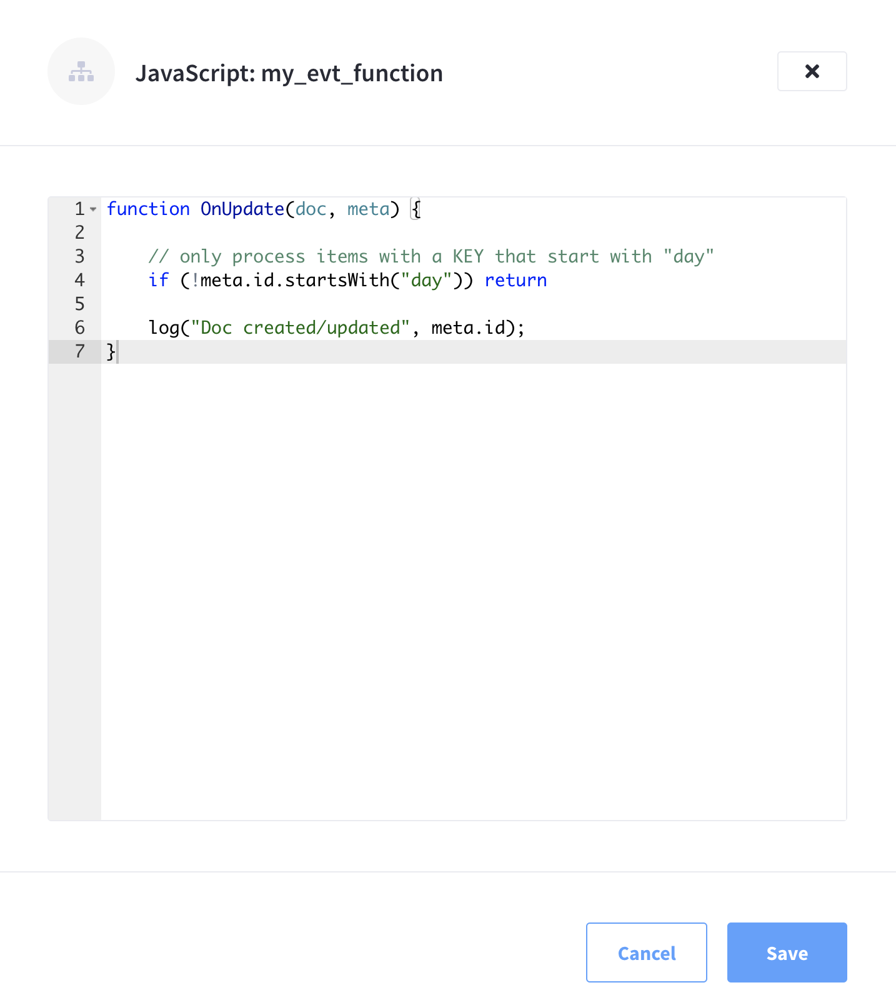

Manage Eventing Functions and Settings
You can manage Eventing functions through the Capella UI for Couchbase hosted clusters.
The Eventing Lifecycle
This is a quick introduction to managing the Eventing Service. We will create a default Eventing Handler and subsequently exercise the Eventing Handler’s functionality and operations across its typical lifecycle.
In order to show the basic life cycle of an Eventing Function, we need a source bucket and a metadata bucket. For the source bucket, we will use the beer-sample sample document set. You must have a metadata bucket, typically called metadata, to be used solely by Eventing. Refer to Prerequisites
Accessing the Eventing Service in the Capella UI
| Eventing in Capella is only supported by Couchbase hosted clusters. |
If a cluster is running the Eventing Service, Eventing Functions can be accessed and managed from within a cluster by clicking . A list of all existing Eventing Functions is shown in table format.

Functions Summary
If there are any Functions saved on the cluster, they are displayed in the Functions summary in the cluster’s Tools > Eventing tab.
The Functions summary lists all existing Eventing Functions in a table format, with sortable columns and a row for each Function.
The Functions summary displays the following information about each Eventing Function:
- Function Name
-
The name of the Function.
- Source Bucket
-
The source bucket of the events or mutations.
- Source Scope
-
The source scope of the events or mutations.
- Source Collection
-
The source collection of the events or mutations.
- Status
-
The status of the Function.
The status can be either in a stable state of Deployed, Undeployed, and Paused or in a transitory state of Deploying, Undeploying, and Pausing.
A More options button () is displayed at the end of each row, which can be used to export, deploy, edit settings, edit JavaScript, delete, and more.
Prerequisites
The Eventing system requires at least two (2) isolated buckets—a source bucket and a metadata bucket. The source bucket is the source of the events or mutations and the second is a scratchpad for the Eventing Service (this can be shared across Functions). The following directions allow you to get all the prerequisites in place to complete the actions on this page using sample data.
For example purposes, the source bucket (the source of the Eventing mutations) will use the sample dataset beer-sample.
-
Click the cluster’s tab.
The Import tab will be displayed.
-
Within the Beer Sample section, click Import to load this dataset.

The
beer-samplebucket with sample data will appear in the buckets list.
The metadata bucket is an Eventing Service scratchpad area that can be shared between multiple Eventing Functions. For example purposes, the metadata bucket uses the settings defined in the steps below.
-
Go to the cluster’s Buckets tab.
-
Click Create Bucket.
This opens the Create Bucket flyout.
-
Fill in the Bucket Name field with the name
metadata. Click Next.The Memory section is now shown.
-
In the Memory section, ensure that a minimum size of 100MB is set. Click Next.
The Backup section is now shown.
-
In the Backup section, leave the default settings unchanged or adjust them as needed. Click Next.
The Settings section is now shown.
-
In the Settings section, leave the default settings unchanged. Click Create Bucket
The new bucket will appear in the buckets list
Add New Function
|
These directions will configure a Function to use the prerequisite buckets created above.
|
-
From the cluster’s Tools > Eventing tab, click Add Function.
This opens the Add New Function fly-out menu.

-
Configure the details in the Add New Function fly-out menu.
-
In the Name field, enter a unique name for the Eventing Function you are creating. The Function name can only start with characters in range A-Z, a-z, 0-9 and can only contain characters in range A-Z, a-z, 0-9, underscore, and hyphen.
-
Click the Source Bucket drop-down menu and select a bucket currently defined on the cluster. For more information on creating buckets, refer to Manage Buckets.
-
Click the Source Scope drop-down menu and select a scope. By default, this is set to the
_defaultscope and does not need to be changed for this exercise. For information on creating scopes, refer to Manage Scopes and Collections -
Click the Source Collection drop-down menu and choose a collection defined on the cluster. By default, this will be set to the
_defaultcollection and does not need to be changed for this exercise. For more information on creating collections, refer to Manage Scopes and Collections -
Click the Metadata Bucket drop-down menu and select the Eventing metadata bucket currently defined on the cluster. You can choose the same bucket as the source bucket, but the collection must differ. Refer to the Couchbase Server documentation for more information about creating and using a metadata bucket for the Eventing Service.
-
Click the Metadata Scope drop-down menu and select a scope. By default, this is set to the
_defaultscope and does not need to be changed for this exercise. You can choose the same scope as the source scope, but the collection must differ. -
Click the Metadata Collection drop-down menu and choose a collection defined on the cluster. By default, this will be set to the
_defaultcollection and does not need to be changed for this exercise. If you chose the same bucket and scope as the source, you must choose a different collection. -
In the Description field, you may enter a description of the Function you are creating.
-
N1QL Consistency: The default consistency level of N1QL statements in the handler. The options in the drop-down menu are
None(the default) andRequest. -
Workers: The number of worker threads per node to be allocated to the Function to process events. The default is
3(the minimum is1maximum is64). -
Script Timeout: The number of seconds that should elapse before the script times out and is terminated. The default is
60. -
Deployment Feed Boundary: The Feed Boundary determines whether documents previously in existence need to be included in the Function’s activities. When the Feed Boundary is set to
Everything, the Function is invoked on all mutations available in the cluster. This is opposed to setting the Feed Boundary toFrom Now, where the Function is only invoked on future instances of data mutation post Function deployment). For the purpose of this exercise, set the Deployment Feed Boundary toEverything. -
Timer Context Max Size: Limits the size of the context for any Timer created by the Function. The default is
1024. -
Language Compatability: The language version of the handler for backward compatibility.
-
-
Add any needed Bucket bindings or URL bindings.
A binding is a construct that allows separating environment-specific variables (example: bucket names, external endpoint URLs, credentials) from the handler source code. It provides a level of indirection between environment-specific artifacts to symbolic names, to help move a handler definition from development to production environments without changing code. Binding names must be valid JavaScript identifiers and must not conflict with any built-in types.
An Eventing Function can have no binding, one binding, or several bindings.
-
Bucket Bindings
Bucket bindings allow JavaScript handlers to access Couchbase KV buckets. The buckets are then accessible by the bound name as a JavaScript map in the global space of the handler.
You can add bucket bindings via the Bucket choice by entering an alias name, choosing an access level (
ReadorRead and Write), and choosing a bucket, scope, and collection. -
URL Bindings
These bindings are utilized by the cURL language construct to access external resources. The binding specifies the endpoint, the protocol (HTTP/HTTPS), and credentials if necessary. Cookie support can be enabled via the binding if desired when accessing trusted remote nodes. When a URL binding limits access through to be the URL specified or descendants of it. The target of a URL binding should not be a node that belongs to the Couchbase cluster.
You can add URL bindings via the 'URL' choice and then entering the following: alias, URL, allow cookies setting, and security settings to validate SSL certificate and an auth type of (No Auth, Basic, Bearer, and Digest).
-
-
Example of a completed Add New Function fly-out menu.

-
Bindings
A binding is a construct that allows separating environment-specific variables (example: bucket names, external endpoint URLs, credentials) from the handler source code.
At the bottom of the Settings fly-out, click Add for each needed binding and then configure them appropriately.
the following example bindings are not used in this example. Example Bucket Bindings
Bucket bindings allow JavaScript handlers to access Couchbase KV buckets. The buckets are then accessible by the bound name as a JavaScript map in the global space of the handler.
Example cURL Binding
These bindings are utilized by the cURL language construct to access external resources. The binding specifies the endpoint, the protocol (HTTP/HTTPS), and credentials if necessary.
 -
Click Save to save the current settings and proceed to the Code Editor fly-out menu.
-
Add your JavaScript code to the Code Editor fly-out menu.

The Code Editor fly-out menu contains valid placeholder code that just logs mutations. You may leave the code unchanged if it fits your needs. In this example, we’ve modified the placeholder code slightly to include a description of the mutation with the log.
-
Once you’re satisfied with the Function’s JavaScript code, you can click Save to save the Function in an undeployed state.
Deploy a Function
When you create or import an Eventing Function, it is initially saved in an undeployed state. The Functions summary shows all functions on the cluster, along with their respective deployment status.
This operation activates an Eventing Function (or handler). Several validations are performed, and only valid handlers can be deployed. The JavaScript source code of an activated handler cannot be edited.
Unless a handler is in the Deployed state, it will not receive or process any events (or mutations). Deployment creates necessary metadata, spawns worker processes, calculates initial partitions, and initiates checkpointing of processed stream data.
-
Click Deploy from the Function’s pop-up menu
To deploy an existing Function, start by finding the specific Function in the Functions summary list, and then invoking the pop-up menu at the right of the Function’s row select the menu item labeled Deploy to deploy the Function.
-
Click Deploy in the Confirm Deploy Function fly-out menu.

The Function will now enter the Deployed state and in several seconds will transition to the Deployed state and start processing events (or mutations).
The Functions summary now lists the function as deployed.

The deployed Eventing Function is now processing mutations.

Undeploy a Function
This operation deactivates an Eventing Function (or handler). The JavaScript source code of a deactivated handler can be edited.
-
Click Undeploy from the Function’s pop-up menu
To undeploy an existing Function, start by finding the specific Function in the Functions summary list, and then invoking the pop-up menu at the right of the Function’s row select the menu item labeled Undeploy to undeploy the Function.
The Undeploy option will not appear until the Function is deployed. -
Click Confirm to undeploy Confirm Undeploy Function fly-out menu.
The Function will now enter the
Undeployingstate and in several seconds will transition to the Undeployed state and cease processing events (or mutations).
Pause a Function
This operation pauses and checkpoints an Eventing Function (or handler). The JavaScript source code of a deactivated handler can be edited. The checkpoint saves the point in the processing stream such that when the Function is later resumed no mutations will be missed. Handlers in the Paused state can be either Resumed or Undeployed.
-
Select Pause from the Function’s pop-up menu
To pause an existing Function, start by finding the specific Function in the Functions summary list, and then invoking the pop-up menu at the right of the Function’s row select the menu item labeled Pause to pause the Function.
The Pause option will not appear until the Function is deployed. -
Click Confirm to complete the action.
The Function will now enter the Pausing state and in several seconds will transition to the Paused state and cease processing events (or mutations).
Resume a Function
This operation is similar to Deploy but reactivates an Eventing Function (or handler) and continues processing of a Function that was previously Paused. Several validations are performed, and only valid handlers can be resumed. The JavaScript source code of an activated handler cannot be edited. Unlike Deploy this operation will start from a previously saved checkpoint from the pause operation to ensure that no mutations are missed. On a resume, the backlog of mutations that occurred when the Function was in the paused state will now be processed. In addition, the backlog of timers that came due while the Function was paused will now also fire as soon as possible (ensuring that no timers are lost). Depending on the system activity and how long the Function was paused, clearing the backlog of mutations may take some time before Handler moves on to current mutations and timers.
-
Click Resume from the Function’s pop-up menu
To resume an existing Function, start by finding the specific Function in the Functions summary list, and then invoking the pop-up menu at the right of the Function’s row select the menu item labeled Resume to resume the Function.
-
Click Confirm to deploy Confirm Resume Function fly-out menu.
The Function will now enter the Deploying state (there is no Resuming state) and in several seconds will transition to the Deployed state and start processing events (or mutations).

Deployment Statistics
Eventing Statistics, for each deployed Function, can be viewed in the Capella UI, the available deployment statistics are:
-
Success - displays the number of processed Functions.
-
Backlog - displays the number of mutations to be processed by a Function.
-
Timeout - displays the number of Functions that have encountered a timeout condition.
-
Failure - displays the number of failures while processing the Function handler code.
-
To display the statistics for a deployed Function, start by finding the specific Function in the Functions summary list, and then invoking the pop-up menu at the right of the Function’s row. Click the menu item labeled Deployment Statistics.
The Deployment Statistics option will not appear until the Function is deployed. -
The resulting Deployment Statistics fly-out will show the current deployment statistics for the Function.

Function Logs
Each deployed Function has its own application log. Application logs allow you to identify and capture various business logic-related activities and errors via user-defined messages specific to each Function.
The information that goes to these log files is solely dependent on the logic of the Function via log(…) statements put inside the individual Function handler’s JavaScript code.
As such, there is no logging level for application logs.
Application logs are primarily used for the development and debugging of business logic.
-
To display the application for a deployed Function, start by finding the specific Function in the Functions summary list, and then invoking the pop-up menu at the right of the Function’s row. Click the menu item labeled Logs.
The Logs option will not appear until the Function is deployed. -
The resulting Logs fly-out will show the current application log for the Function.

Edit Settings
|
Only a subset of settings can be edited when a Function is in a deployed state. To be able to edit the most amount of settings, first put the Function in a paused or undeployed state. |
-
To modify a specific Function’s settings, start by finding the Function in the Functions summary list, and then invoking the pop-up menu at the right of the Function’s row select the menu item labeled Edit Settings.
Only a subset of the Function’s settings are available for modification after the Function is created.
-
Name: Cannot be modified
-
Source Bucket: Cannot be modified
-
Source Scope: Cannot be modified
-
Source Collection: Cannot be modified
-
Metadata Bucket: Cannot be modified
-
Metadata Scope: Cannot be modified
-
Metadata Collection: Cannot be modified
-
Description: Can be modified at any time
-
N1QL Consistency: Can be modified at any time
-
Workers: Can be modified at any time
-
Script Timeout: Can be modified at any time
-
Deployment Feed Boundary: Can only be modified when the Function is in an undeployed or paused state
-
Timer Context Max Size: Can only be modified when the Function is in an undeployed or paused state
-
Language Compatibility: Can only be modified when the Function is in an undeployed or paused state
-
-
To modify any of the above settings that require the Function to be in an undeployed or paused state, you will first need to undeploy or pause the Function by invoking the appropriate action from that pop-up menu at the right of the Function’s row.
-
Once you’re satisfied with the modifications you’ve made to the Function’s settings, click Save to commit the changes.

Edit JavaScript
| You can only edit a Function’s JavaScript when it is in a Paused or Undeployed state. |
-
To modify a specific Function’s JavaScript code, start by finding the Function in the Functions summary list, and then invoking the pop-up menu at the right of the Function’s row select the menu item labeled Edit JavaScript.
-
You may now use fly-out editor to modify and change your business logic.
 -
Once you’re satisfied with the modifications you’ve made to the Function’s JavaScript code, make sure to click Save to commit the changes.
Delete Function
Before you can delete a specific Function, you must first ensure that it is undeployed. Only Functions that are undeployed can be deleted.
-
To delete a specific Function’s settings, start by finding the Function in the Functions summary list, and then invoking the pop-up menu at the right of the Function’s row select the menu item labeled Delete.
-
Click Confirm.